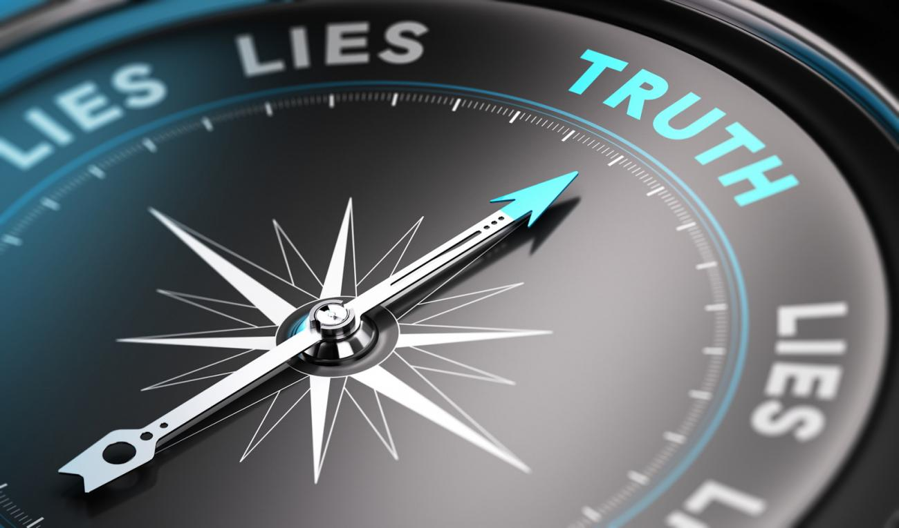

The Big Truth
topics: US politicsdemocracygovernancesystemic
10 min read

As I write these words, the invasion of our US Capitol in DC is only a week behind us.
At least in terms of what I've been reading (and writing) over the intervening period, many of us are wracked anew by the question of how it could have come to this, and what these actions might mean for our future.
In particular, many of us are wondering how so many people could have come to believe The Big Lie. Under Trump, the Lie has taken many forms, but by now its general outline is clear: Trump is the ultimate winner, only he can be trusted and believed, all other sources of information and authority are to be treated with utter contempt, and so on.
But now I think it's time to move on to some more urgent questions:
- How do we end The Big Lie?
- How do we heal our society?
- How do we bring our divided citizenry back together around a shared set of beliefs and values?
And I'm reminded of a piece of wisdom from Ken Wilber:
I have one major rule: Everybody is right. More specifically, everybody – including me – has some important pieces of truth, and all of those pieces need to be honored, cherished, and included in a more gracious, spacious, and compassionate embrace.
And so, I'm starting to wonder, if we want to end The Big Lie, what undisclosed pieces of truth do we need to bring out into the open in order to achieve a more spacious shared understanding of our common reality?
In other words, what is The Big Truth that we have yet to acknowledge?
And I start with this:
Our leaders have failed us.
The core responsibility of leadership, as I think we all understand, is to ensure the continued survival of the tribe.
This is why ancient tales of Moses leading his people to the promised land still resonate with us today.
This is why Britons still revere the memory of Winston Churchill, who led their country through the darkest hours of WW II.
And this is why students of business still analyze the resurrection and resurgence of Apple under the leadership of Steve Jobs.
This core responsibility of leadership, to ensure the survival of the tribe, is not carried out through easy decisions and quick wins and short-term profits; it is not accomplished through routine meeting attendance and delegation; it is not fulfilled through the achievement of annual operating goals and the collection of accompanying bonuses; rather, it is fulfilled through recognition of critical long-term goals, and the courage to hold one's tribe together, and to urge them to do whatever it takes in order to achieve those goals.
However, wherever we sit today, and no matter what modern tribe we may be discussing, it is all too clear that the only “tribe” our leaders have been saving is the one made up of the very wealthiest members of society.
All of us are interested in survival, at least for ourselves and our families over the spans of our natural lives, and very often also for our children and grandchildren.
And yet our leaders have fashioned a society in which we all, except for the moneyed class, have to worry almost continuously about existential threats such as:
- Job loss due to business downturns;
- Job loss due to relocation of work;
- Job loss due to poor leadership decisions;
- Loss of careers due to changes in technology;
- Insufficient income to support ourselves in retirement;
- Loss of homes due to income fluctuations;
- Inadequate supplies of healthy food and clean water;
- Global warming;
- Other forms of environmental collapse and ecological overwhelm.
And what have our leaders done about any of this? At most, no matter where we turn – whether to business, or to the liberals, or the conservatives, or to religion, or to the academics, or to the commentators – they have made fine speeches and expressed noble intentions but taken little or no action, other than to line their own pockets and occasionally throw a few scraps to the rest of us.
And so, if we do not have the leaders we need, we must ask ourselves what systems and processes were supposed to produce them, and why they have failed.
Our educational systems have failed us.
We have been relying primarily on Ivy League colleges and MBA programs to produce society's leaders for us.
And yet colleges have been slow to adapt to changing conditions, and become too focused on serving the moneyed class. And MBA programs have focused too tightly on spreadsheets and PowerPoints, with the goal of meeting ambitious income and revenue targets for corporations. Our business leaders have been taught to serve their corporations – abstract theoretical constructs devoid of flesh and blood – while ignoring the effects of their decisions on real people.
And none of these educational institutions have placed sufficient emphasis on enduring human values and society and culture, let alone on qualities of leadership.
How can we expect people to lead their tribes to ongoing survival, when they have been taught to only serve the tribe of capitalists existing at the very tops of their corporate hierarchies?
In researching this piece, I had occasion to refer to Dr. Martin Luther King Jr.'s speech in which he said he had “been to the mountaintop,” and I marvel at his erudition and wisdom. Here he was speaking to his tribe, consisting of ordinary folks, and he began by referring to a “general and panoramic view of the whole of human history up to now.” And then went on to cite examples relevant to his tribe's current situation.
Unfortunately, outstanding societal leaders such as King seem to have been produced more by accident than by intention – and of course when such leaders have emerged, they have all too often been gunned down, victims of the very systems they are trying to change.
We need more actions, and fewer words.
Our political “leaders,” along with our commentariat, too often seem to think it sufficient to spout reams of empty words with the sole intent of grabbing our attention for some little space of time.
Although I've been a user of Apple products for many years, it was only recently that I viewed my first Apple Event, and I was surprised by it, in some odd way that I could not quite define for myself.
It's only now, as I write this piece, that I realize what aspect of this recorded presentation struck me with its novelty:
People were using words, not to talk about what they wanted to do, or what they thought should be done, or what they would do if only they could… they were using words to briefly explain what they had already accomplished. And each thing described was plainly the result of long months and years of dedicated application of significant resources by themselves and their colleagues.
More doing. Less talking. That's what we need.
I made earlier reference to the growing urgency of environmental issues. And this brings me to the next element of The Big Truth.
There are too many of us.
For far too long our leaders have been motivated by growth in all things. Business leaders want to increase their sales. Shareholders want to increase their profits. Political leaders want to grow their GDP. Religious leaders want to increase the sizes of their flocks. And population growth is an easy fuel for growth in all these other areas.
But where does all this lead? All the data indicates that human population levels have been growing at an incredible rate, to unsustainable levels, and is still arcing upwards.
And for many of us, I know, this has become a felt reality. Traffic has gotten worse. Housing prices have gone up. Cities have become more crowded. Job markets have become more competitive. Infrastructure can't keep up. And those who dream of moving from the city to the country find that the country has already filled up, and houses are still unaffordable there (if they haven't burnt to the ground in the latest round of devastating fires).
It was not so long ago in human history that population growth was something that could help a tribe survive, could help a group defend itself from attacks by others.
But human population growth is a two-edged sword, and we are increasingly seeing the effects of turning the blade upon ourselves.
It's time to bring this reality out into the open, and have some honest discussion about its implications.
And now on to the final element of The Big Truth.
We cannot all have infinite abundance.
This started as sort of a new-age idea in the sixties. And it has been fueled by advances in technology, with its record of bringing so many of us wave after wave of increased productivity, greater comfort, and ever shinier new toys.
But as environmental concerns pile up, technology can no longer keep up. New technologies with other goals often have undesirable ecological side effects, and technologies with explicit goals of reducing environmental stress are not coming along quickly enough.
And so now, no matter where we live and no matter what our station in life, we have to acknowledge the reality of limited resources. Even in “the richest country in the world,” as I so often hear the US described, there are not enough riches for all of us to enjoy wealth, not enough resources to accomplish every worthwhile goal.
This does not mean we cannot pursue and achieve goals of justice and equity, but it does mean that our leaders have to help us make hard decisions about how to allocate finite sets of resources.
The Bottom Line
And so, in order to end the growth of The Big Lie, I think it is past time to acknowledge and embrace all five elements of The Big Truth.
- Our leaders have repeatedly and thoroughly failed to take actions necessary for the survival of the tribes to which most of us belong.
- Our educational systems have failed to produce the leaders we need, and instead have produced people who have led us down blind alleys and into box canyons.
- Human population growth cannot continue forever, and current population levels have already reached a level that is unsustainable.
- We need more doing, and less talking.
- We cannot pretend that we have access to infinite wealth; hard decisions will have to be made about how to best allocate scarce resources.
Now here's the thing: if we look at the success of Trump and the political Right over the last several years, I think we can easily see that people have been driven in that direction because of the Left's refusal to acknowledge what I am calling The Big Truth. After all, the assertions that I have made above are not abstract and academic: these are things that ordinary people see and feel on a daily basis, even perhaps on a subconscious level. And if one set of leaders acts as if none of these things are true – if they in fact try to assert an alternate sort of reality – then we should not be too surprised when other leaders emerge who are valued precisely because they say what they feel, and what others are feeling, and do not hide behind “politically correct” representations of reality.
As Shakespeare noted, “at the length truth will out,” and if one party is not willing to acknowledge it, then others will.
So it's time for leaders who wish to be worthy of that title to acknowledge The Big Truth, and start with these realities before trying to lead us to a better future.
Anything else, I fear, will doom us to yet another cycle of political opportunism that leads us nowhere.